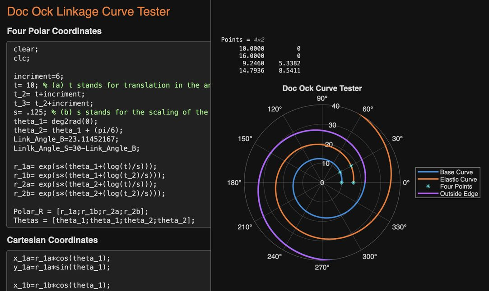
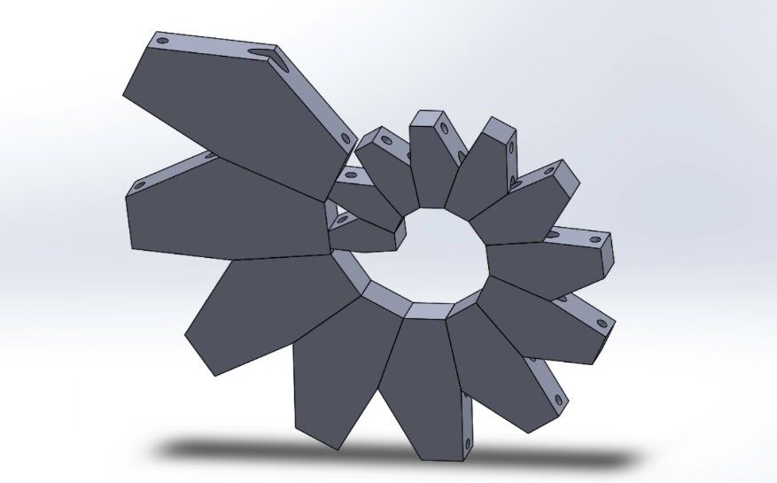

Logarithmic Gripper
Project Overview
Designed and prototyped a meter long bio-inspired gripper that mimics the curling motion of animal appendages. The arm’s closed path follows a logarithmic spiral, commonly found in nature for its efficient growth and motion. The project drew inspiration from the SpiRobs project from the University of Science and Technology of China.

Parametric Modeling
I developed a fully parametric SolidWorks model where the arm’s geometry is driven by logarithmic spiral equations. I derived, tested, and verified the geometry first in a MATLAB live script before moving the parametric equations into SolidWorks global variables.
Physical Prototype
The arm is composed of linkages 3D printed in ABS. The joints connecting the linkages are printed in TPU, providing the elastic layer to allow the arm to uncurl and remain erect. The arm uses three 0.8mm UHMWPE cords to translate the motion from stepper motors at the base through the arms.

